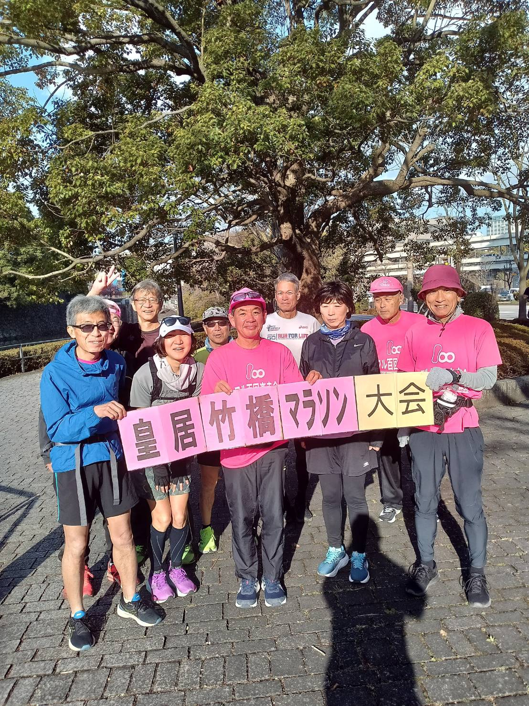
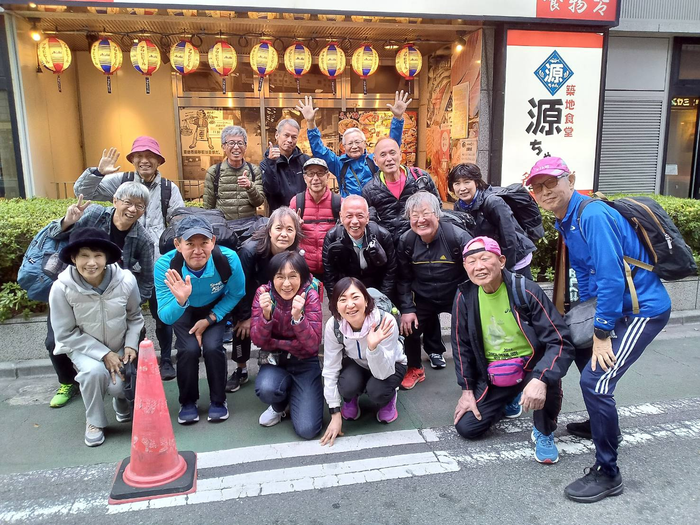

2026-03-07 17:40:34
2026年3月7日（土曜日）（場所：皇居、天候：晴れ、気温：9～17°Ｃ）（担当）宮野
| No | 地区会員番号 | 氏名 | 種目 | タイム | フル百 |
|---|---|---|---|---|---|
| 1 | 273 | 福井 康太 | フル | 4:18:53 | 841 |
| 2 | 245 | 享保 真二 | フル | 4:28:23 | |
| 3 | 208 | 盛井 恒男 | フル | 4:55:24 | 848 |
| 4 | 266 | 中村 紀代子 | フル | 5:17:05 | |
| 5 | 129 | 中家 和宏 | フル | 5:18:58 | |
| 6 | 231 | 北田 明生 | フル | 5:31:28 | |
| 7 | 199 | 井出 優子 | フル | 5:46:08 | 856 |
| 8 | 258 | 池尻 彰 | フル | 6:16:41 | 894 |
| 9 | 281 | 野口 好夫 | フル | 6:24:23 | 18 |
| 10 | 66 | 大野 清美 | フル | 8:06:43 | 532 |
| 11 | 283 | 石井 功 | フル | 8:35:23 | 817 |
| 12 | 166 | 山口 真澄 | 32.2㎞ | 5:29:30 | |
| 13 | 96 | 藤懸 快至 | 20㎞ | 2:24:05 | |
| 14 | 139 | 島田 八十美 | 17.2㎞ | 3:09:08 | 830 |
| 15 | 105 | 宮野 繁 | 12.2㎞ | 3:17:42 | 854 |
| 16 | 13 | 住川 万里子 | 7.2㎞ | 1:30:00 | |
| 17 | 3 | 竹田 昭彦 | 5㎞ | 1:01:39 | 3 |
コメント 享保さん、藤掛さん久し振りの参加。マラソン終了後池尻さんの送別会を行った。竹田さんから美味しい酒の差し入れ有、飯田さんから御祝儀有、ありがとうございました。

